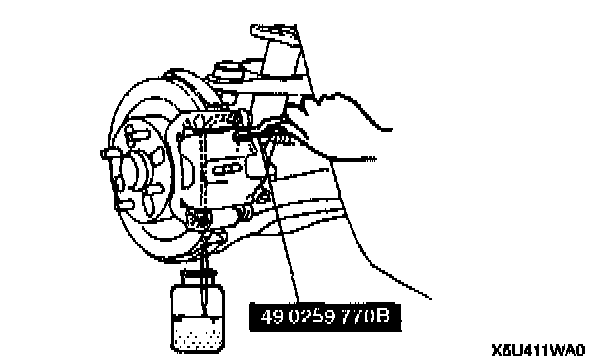

Manual Air Bleeding
Note: The brakes should be bled whenever a brake line is disconnected. If a hydraulic line is disconnected at the master cylinder, start at the brake caliper or wheel cylinder farthest from the brake master cylinder, and move to the next farthest brake caliper or wheel cylinder until all four have been bled. If the disconnection point is anywhere except the master cylinder, start at the point closest to the disconnection, and move to the next closest brake caliper or wheel cylinder until all four have been bled.1. On level ground, jack up the vehicle and support it evenly on safety stands.
2. Remove the bleeder cap and attach a vinyl tube to the bleeder screw.
3. Place the other end of the vinyl tube in a clear, brake fluid-filled container.
4. The first person depresses the brake pedal several times, and then holds it in the depressed position.

5. The second person loosens the bleeder screw, drains out the fluid and closes the screw by using the Special Service Tool (SST)
6. Repeat step 4 and 5 until no air bubbles are seen. The reservoir should be kept about 3/4 full during bleeding to prevent air from reentering the lines.
Tightening torque: 5.9-8.8 Nm (60-90 kgf-cm, 53-78 inch lbs.)
7. Inspect for correct brake operation.
8. Verify that there is no fluid leakage. Wipe off any spilled fluid immediately.
9. After bleeding the brakes, add brake fluid to the maximum level.